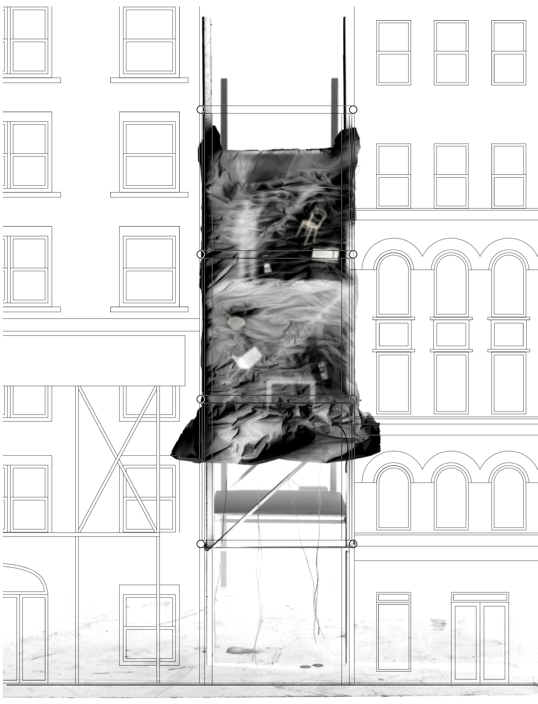

Accumulation: Plastic Provocations
Core II Studio, Critic: Miriam Peterson
Spring 2020
This project investigated the ontology of plastic as a material that blurs the boundary between what is alive and what is dead, organic and inorganic. Prompted to consider the design of a “minimum dwelling,” the project posits a lending library of household objects rather than a discrete living unit. The focus is on the wall section, which imagines an assemblage of plastic packaging air bags filled with fruit and vegetable waste; the produce, in its ongoing decay, inflates the bags by off-gassing ethylene. Shared objects of the library are held by the surface tension of the wall. The assembly is installed parasitically like scaffolding against existing urban dwelling units.
